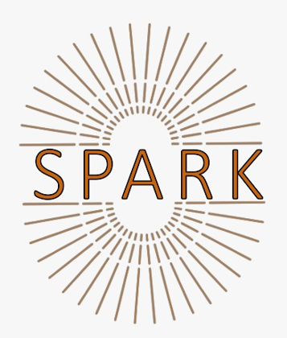

About
My research is in the area of Software Engineering (SE) and Artificial Intelligence (AI). Here is a link to the Research page.

Assistant Professor of Software Engineering
Eman Abdullah AlOmar is an Assistant Professor of Software Engineering at Stevens Institute of Technology. Her research interests lie at the intersection of software engineering and artificial intelligence, with a focus on different software engineering areas such as software maintenance, software evolution, software refactoring, technical debt, software quality assurance, code review, and documentation. She has received four Best Paper Awards and Best Presentation Awards at IWoR 2019, MSR 2022, MSR 2024, and SIGCSE 2024. She has also received the Distinguished Doctoral Research Award at MSR 2023, and Best Reviewer Award at JSS 2022 and JSS 2023. She is the recipient of Jess H. Davis Memorial Award for research excellence at School of Systems and Enterprises at Stevens Institute of Technology, 2024. She has co-authored over 50 peer-reviewed papers, including works appearing in top venues like TSE, EMSE, ICSE, FSE, and ASE. Her collaborations with national and international researchers and industry leaders have resulted in ACM and IEEE publications in leading software engineering platforms.
She served as a program co-chair for IWoR and CSER, and regularly serves as a program committee member and journal reviewers of international conferences and journals in the field of software engineering, such as ICSE, ASE, ICSME, MSR, ICPC, MobileSoft, TSE, TOSEM, EMSE, and JSS.
Research Interests
- Software Refactoring & Code Smell
- Machine Learning / Deep Learning / Language Models
- Software Quality, Maintenance and Evolution
- Empirical Software Engineering
- Mining Software Repositories
- Program Comprehension
- Technical Debt
Intelligent Software Engineering and Program Analysis to Advance Research and Knowledge Lab (SPARK).
The SPARK lab is dedicated to advancing the field of software engineering and artificial intelligence through intelligent program analysis, innovative open-source tools, and empirical research. It provides a collaborative environment for students and researchers to tackle real-world software challenges such as software quality, maintenance, and evolution, and drive impactful innovation. Our lab aims to lead advancements in software engineering by fostering innovation, collaboration, and education. Through research and tool development, the lab strives to address emerging challenges, empower developers, and shape the future of intelligent software engineering. Dr. AlOmar is the director of this lab which comprises talented graduate and undergraduate students with a shared interest in software engineering research.
I always seek self-motivated, hard-working undergraduate and graduate students to join my team. If you are interested, please look on my Google Scholar to see if you are passionate about any of these topics, then contact me.